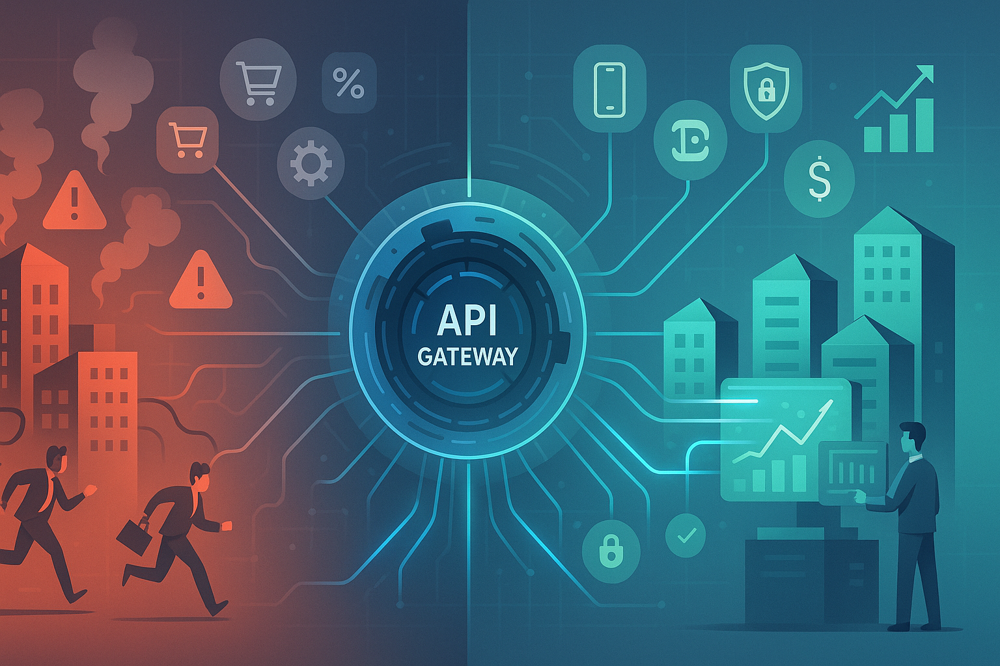

Quando a Comunicação Entre Sistemas Para: Uma Lição sobre API Gateway

Tempo de leitura: 8 minutos
A História que Mudou Tudo
Era uma segunda-feira comum de março quando o diretor de TI de uma empresa de médio porte recebeu uma ligação que mudaria para sempre a forma como enxergava a arquitetura de sistemas. Do outro lado da linha, a gerente de vendas estava visivelmente nervosa:
"Nosso sistema de vendas está fora do ar! Os clientes não conseguem fazer pedidos, o site está lento, e perdemos três contratos importantes só esta manhã!"
O que a área de vendas não sabia é que, naquele momento, a organização estava enfrentando o que muitas empresas modernas enfrentam: o caos da comunicação digital. Seus 15 sistemas diferentes tentavam se comunicar entre si como pessoas gritando em idiomas diferentes numa estação de trem lotada.
O Problema Real: Quando a Tecnologia Vira Contra Você
A empresa tinha crescido rapidamente. Ao longo dos anos, havia adquirido diferentes sistemas:
- Um CRM antigo mas funcional
- Um sistema de estoque moderno na nuvem
- Uma plataforma de e-commerce terceirizada
- Sistemas financeiros internos
- Aplicativos móveis para vendedores
Cada sistema funcionava perfeitamente... sozinho. O problema surgiu quando eles precisavam conversar entre si.
Imagine tentar coordenar uma festa de aniversário onde:
- O padeiro só fala francês
- O florista só entende português
- O músico só responde por WhatsApp
- O fotógrafo só usa e-mail
- E você precisa que todos cheguem no mesmo horário
Era exatamente isso que acontecia nos sistemas da organização, mas multiplicado por milhares de transações por dia.
O Momento da Revelação
Após três dias de apagões intermitentes e uma reunião de emergência com o conselho, a liderança de TI descobriu a solução que mudaria tudo: API Gateway.
"É como ter um tradutor universal e organizador pessoal para todos os nossos sistemas", explicou a consultoria em arquitetura de sistemas contratada para resolver a crise.
Afinal, o que é uma API Gateway?
Pense na API Gateway como o recepcionista mais eficiente do mundo.
Quando você chega em um grande hotel corporativo, não precisa saber onde fica cada departamento, quem é responsável por cada serviço, ou qual idioma cada funcionário fala. Você simplesmente vai até a recepção e diz o que precisa. O recepcionista:
- Entende seu pedido (independente de como você o formulou)
- Traduz e roteia para o departamento correto
- Coordena as respostas de diferentes setores
- Entrega uma resposta organizada para você
- Mantém registro de tudo para melhorar o serviço
Uma API Gateway faz exatamente isso, mas com sistemas de computador.
Traduzindo para o Mundo dos Negócios
API significa "Interface de Programação de Aplicações" - basicamente, é a forma como diferentes programas conversam entre si.
Gateway significa "portal" ou "entrada" - é o ponto central por onde tudo passa.
Juntos, formam um sistema de comunicação inteligente que organiza, traduz e direciona todas as conversas entre seus sistemas empresariais.
Como Funciona na Prática: Um Caso Real
Antes da API Gateway, quando um cliente fazia um pedido online, acontecia isto:
Cliente faz pedido → Sistema de e-commerce → Tenta falar com estoque
↓
Sistema de estoque responde em formato diferente
↓
E-commerce tenta traduzir → Falha na comunicação
↓
Cliente vê erro "Sistema indisponível"Depois da implementação da API Gateway:
Cliente faz pedido → API Gateway recebe
↓
Gateway traduz para linguagem do estoque
↓
Estoque responde → Gateway traduz de volta
↓
Gateway coordena com sistema financeiro
↓
Resposta unificada para o cliente: "Pedido confirmado!"As Vantagens que Transformaram a Operação
1. Simplicidade Operacional
Antes: a liderança de TI precisava de 5 especialistas diferentes para manter os sistemas conversando.
Depois: um sistema central gerencia todas as comunicações.
2. Segurança Centralizada
Antes: Cada sistema tinha suas próprias regras de segurança (ou não tinha).
Depois: Todas as comunicações passam por um ponto seguro e monitorado.
3. Escalabilidade Inteligente
Antes: Se o sistema de vendas crescesse, todos os outros sistemas sofriam.
Depois: A Gateway distribui a carga automaticamente.
4. Visibilidade Total
Antes: Quando algo dava errado, era impossível saber onde.
Depois: a equipe de TI pode ver em tempo real o que está acontecendo em cada integração.
5. Economia Real
Resultado após 6 meses:
- 70% menos tempo de inatividade
- 50% redução nos custos de manutenção
- 90% menos chamados para o suporte técnico
As Desvantagens: Sendo Transparente
Como toda solução, API Gateway não é mágica:
1. Ponto Único de Falha
Se a Gateway sair do ar, todos os sistemas param de conversar. É como se o recepcionista do hotel fosse embora - ninguém mais sabe para onde direcionar os hóspedes.
Solução: Sistemas redundantes e backup automático.
2. Complexidade Inicial
Implementar uma Gateway é como renovar a casa enquanto você mora nela. Requer planejamento cuidadoso.
Realidade: O investimento inicial vale a pena pelos benefícios de longo prazo.
3. Dependência de Expertise
Você precisa de pessoas que entendam do assunto, pelo menos inicialmente.
Estratégia: Treinamento da equipe e documentação adequada.
Quando Sua Empresa Precisa de uma API Gateway?
Sinais de Alerta:
- Sistemas que não "conversam" bem entre si
- Integrações que quebram frequentemente
- Dificuldade para adicionar novos sistemas
- Problemas de segurança em integrações
- Falta de visibilidade sobre o que está acontecendo
O Momento Certo:
- Quando você tem mais de 3 sistemas que precisam se integrar
- Antes de implementar novos sistemas importantes
- Quando segurança e compliance são prioridades
- Se você planeja crescimento ou expansão
Seis Meses Depois
Com a API Gateway em produção, a organização passou a:
- Triplicou o volume de vendas online sem problemas técnicos
- Implementou 3 novos sistemas em semanas (antes levava meses)
- Reduziu drasticamente os custos operacionais de TI
- Melhorou a experiência do cliente significativamente
A área de vendas passou a ser uma das maiores defensoras dos investimentos em tecnologia.
Para Executivos: Perguntas Essenciais
Antes de decidir sobre uma API Gateway, pergunte-se:
- Quantas vezes por mês nossos sistemas falham na comunicação?
- Quanto tempo perdemos resolvendo problemas de integração?
- Qual o custo real de cada hora de sistema fora do ar?
- Como seria nosso crescimento se a tecnologia não fosse um limitador?
Conclusão: A Tecnologia a Serviço do Negócio
O caso ensina que tecnologia não é sobre ter os sistemas mais modernos, mas sobre fazer com que eles trabalhem juntos de forma inteligente.
Uma API Gateway não é apenas uma solução técnica - é uma estratégia de negócio que transforma a forma como sua empresa opera, cresce e se adapta ao mercado.
A pergunta não é se sua empresa precisa de uma API Gateway, mas quando você vai implementar esta solução que pode ser o diferencial competitivo que faltava.
Sobre Este Projeto
Este artigo acompanha uma implementação prática de API Gateway desenvolvida para demonstrar os conceitos apresentados. O código fonte está disponível mediante contato em suporte@caracore.com.br.
Recursos Técnicos Incluídos:
- Interface web para gerenciamento de URLs
- Servidor Python com framework assíncrono
- Configuração OpenAPI
- Sistema de roteamento dinâmico
- Documentação técnica completa
Pronto para transformar sua arquitetura de sistemas? Explore os arquivos deste projeto e veja como implementar sua própria solução.
Nota: Este artigo apresenta um caso de uso com propósito educativo e técnico. Os conceitos, desafios e soluções de API Gateway são baseados em situações reais de integração entre sistemas em ambientes empresariais. Nomes e identificações foram generalizados para preservar confidencialidade.
Hashtags: #APIGateway #ArquiteturaDeSoftware #IntegraçãoDeSistemas #Microserviços #TecnologiaEmpresarial #DesenvolvimentoDeSoftware #SistemasDistribuídos